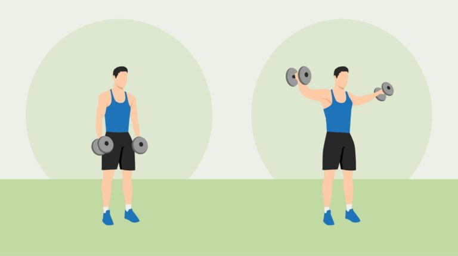

Push Day Workout Routine: Guide For Building Muscle & Strength
1. Warm up
Kick-start your workout with about 5 to 10 minutes of light cardio. Activities such as cycling, push-ups, or jogging increase blood flow and warm up your muscle groups.
It also prepares the body for the upcoming workout. You may find it helpful to include stretches for your shoulders, chest, and triceps during warm-ups.

2. Bench press
The bench press is a popular exercise that works on the muscle groups of your upper body. It is effective in chest muscle development, which can increase 10 to 20% in muscle thickness over 3 months.[4]
It also works on the triceps, promoting its growth. If you ever choose to focus on a single exercise to enhance your upper body muscles, the bench press is a great choice.
3. Overhead Press
Another classic exercise you should implement to develop your muscle groups is the overhead press.
It typically works on your front and middle deltoids and triceps. Your entire body is also active during this exercise.
4. Incline Dumbell bench press
Lateral raises are effective for targeting the lateral (side) deltoids. This exercise enhances shoulder width and overall shoulder development.
5. Dumbbell Lateral Raise
Tricep dips are a compound exercise that targets the triceps. It's an effective bodyweight movement for building strength in the triceps.

6. Dumbbell Chest Fly
Cable tricep pushdowns isolate the triceps and are great for sculpting and defining the back of the arms.
7. Barbell Lying Triceps Extension
Push-ups are a versatile bodyweight exercise that engages the chest, shoulders, and triceps. They can be adjusted for various fitness levels.